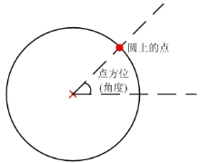

圆解析工具对输入的圆进行解析处理，得到圆心位置和半径。
| 分类 | 参数名称 | 参数描述 |
|---|---|---|
| 属性窗口 | 点方位(角度) | 与角度为0点(X轴与圆的右交点)的相对角度，一般用于计算圆上某角度方位上的点。 |
| 图像窗口 | 无 | 无 |
| 数据链 | 圆 | 输入需要解析的圆信息。 |
| 高级界面 | 无 | 无 |
| 分类 | 参数名称 | 参数描述 |
|---|---|---|
| 监视窗口 | 圆心 | 输出圆心位置信息。 |
| 半径 | 输出圆的半径信息。 | |
| 圆上的点 | 满足预设条件(点方位)的圆上点的坐标。 | |
| 执行结果 | 工具执行结果。 | |
| 执行时间 | 工具执行时间。 | |
| 图像窗口 | 无 | 无 |
| 数据链 | 圆心 | 输出圆心位置信息，供后序工具使用，同监视窗口的圆心参数。 |
| 半径 | 输出圆的半径信息，供后序工具使用，同监视窗口的半径参数。 | |
| 圆上的点 | 满足预设条件(点方位)的圆上的点信息，供后序工具使用，同监视窗口的圆上的点参数。 |
如图1所示，沿着点方位(角度)的方向与圆的交点为输出的圆上的点(红色圆点)。

无
参见“\Samples\形状间距及相关点.gvp”。